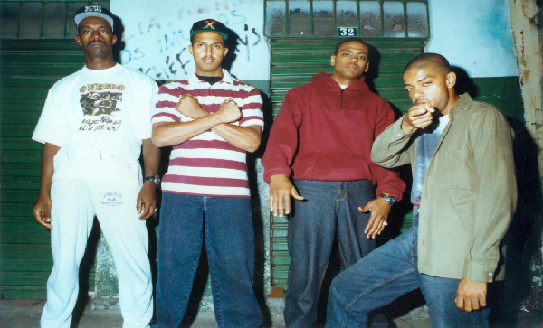
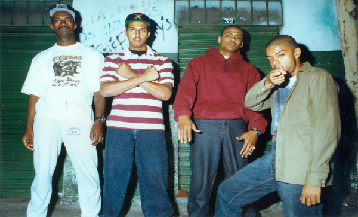

Racionais MC's é um grupo brasileiro de rap, fundado em 1988. É formado por Mano Brown, Ice Blue, Edi
Rock e KL Jay. É o maior grupo de rap do Brasil, e está entre os grupos musicais mais influentes do país
e da música brasileira. Suas canções demonstram a preocupação em denunciar a destruição da
vida de jovens negros e pobres das periferias brasileiras e o resultado do racismo e do preconceito, ao
sustentarem a miséria diretamente ligada com a violência e o crime. Temas como a brutalidade da
polícia, do crime organizado e do estado, bem como o preconceito, as drogas e a exclusão social são
recorrentes nas letras do conjunto. Embora inicialmente conhecido apenas na capital paulista, o
grupo conseguiu alcançar sucesso significativo a partir dos álbuns Raio X Brasil (1993), Sobrevivendo no
Inferno (1997) e Nada como um Dia após o Outro Dia (2002).


 
